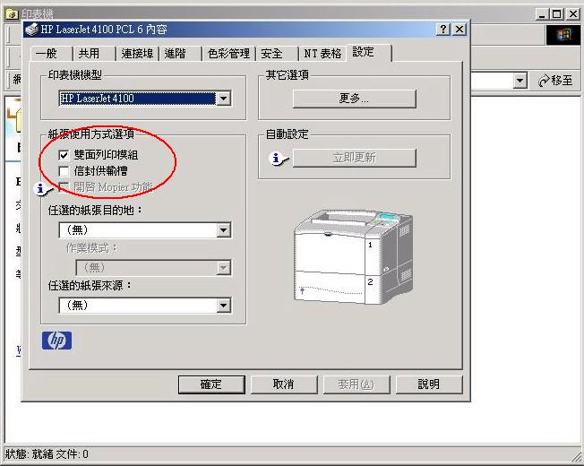

以下以 Windows 2000 Pro. 為例, 其他 OS 請自行體會 :)
開始 -> 設定 -> 印表機 -> 新增印表機
選"本機印表機"
第一次安裝時上面會找不到, 所以選下面"建立新的連接埠",
類型選"Standard TCP/IP Port", 然後按下一步
輸入印表機 IP 位址 : 140.113.214.106
然後會停一段時間, 發現 Win2000 不認識網路印表機裝置,
此時手動選擇 "Hewlett Packard JetDirect Ex(single port)",
然後按下一步
上面出現剛安裝的連接埠, 選擇它之後按下一步
接著 Win2000 會要求安裝印表機 Driver, 目前 WinXP 已直接支援,
Windows 2000 請抓 驅動程式
回去解開, 安裝時選 "HP LaserJet 4100 PCL 6"
安裝完之後記得先打開雙面列印模組
到 "開始 -> 設定 -> 印表機", 該台印表機上按滑鼠右鍵, 選"內容"
到"設定"書籤, 將"雙面列印模組"打勾, 然後按確定

edited by tsaimh, Jul. 30, 2003